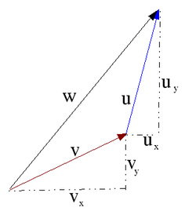
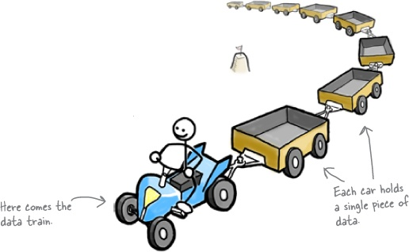
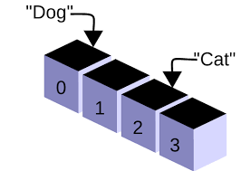

Vetores
Created by Fernando Marques
Revisão
- Lógica Booleana - questionário no Ava!
- "For" e "de um for sobre o outro"
- Operadores lógicos e relacionais
- if-else, switch e break
Aula de Hoje
- Vetores!
- O que são vetores
- Declaração
- Acessando elementos e índices
- Inicialização
O que são vetores

- Vimos um exercício de calcular a média de notas, mas e se fossem 100 notas? Como declarar as variaveis?
- Com vetores (ou array) podemos acessar a diversos elementos consecutivos
- Assim, podemos salvar um número pré-determinado de valores na variável
Declarando um vetor

int notas[50];
// Declara um vetor de 50 notas- Os vetores podem ser de qualquer tipo, mas todos os seus elementos devem ser do mesmo tipo
- int - tipo dos elementos do vetor
- notas - nome da variável que guardará os elementos
- 50 - número de elementos que a variável notas pode guardar
Acessando elementos e índices

int variaveis[10];- Depois de declarar o vetor, podemos acessar seus elementos
- Para atribuir o valor 10 ao 21º elemento: notas[20]= 10;
- O índice do primeiro elemento é o 0
- Se tentar acessar um índice maior que o tamanho do vetor teremos um erro!
Inicializando um vetor
#include <stdio.h>
int main(){
int notas[50],i;
for (i=0;i<50;i++){
notas[i] = 0;
}
}
Outra forma de inicializar vetor
#include <stdio.h>
int main(){
int notas[50] = { 1,2,3};
}
- Nesse caso, os três primeiros elementos são inicializados com os valores 1,2 e 3 e todos os outros com valores 0
Exercícios
- Dada uma sequência de n números, faça um algoritmo que a imprime na ordem inversa
- Solicite ao usuário 5 números inteiros, guarde-os em um vetor, mostre-os na tela e, em seguida, conte quantos elementos são negativos e informe ao usuário
- Leia um vetor de 10 elementos e encontre a posição do elemento m (dado pelo usuário) no vetor. Caso o elemento não exista no vetor informe ao usuário
Exercícios II
- Leia um vetor com 20 elementos. Faça a troca do primeiro elemento com o último, do segundo com o penúltimo, e assim por diante, até o décimo com o décimo primeiro
- Avaliação de Um Minuto